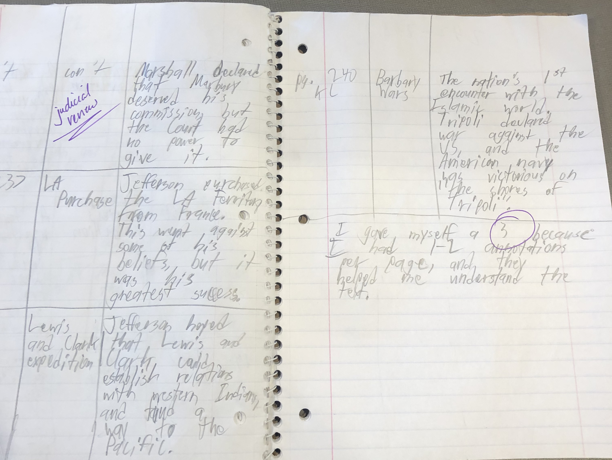

My SMART Goal was to improve on my annotations. Towards the beginning of the year, I was often distracted while working on my annotations, but throughout the year, I grew more focused while working. I think that I have been doing better on my annotations, however, I feel that I could still do more.

Some of my annotations Home Page